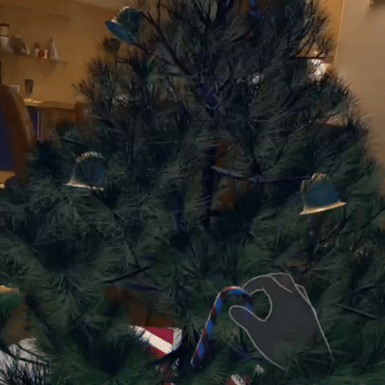
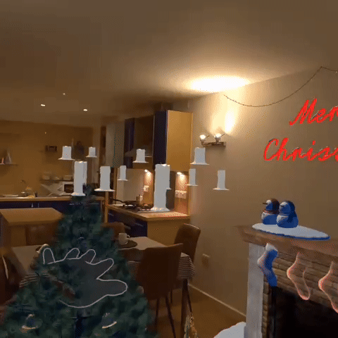
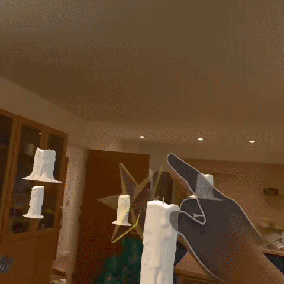
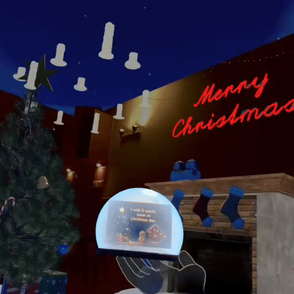

1. Meta SDK Integration
Utilises Meta SDK to build an immersive MR environment with advanced hand-tracking for gestures, grabbing, snapping, and natural spatial interactions.




A Mixed Reality Advent Calendar that transforms your own physical space into a living, evolving Christmas story.
It's a real-world narrative unfolding inside your personal environment.
For centuries, advent calendars have helped people slow down and savor each day before Christmas. But today, our lives are fast, digital, and flat. We scroll, we swipe, we forget. The MR Advent Calendar brings back that lost sense of presence. It invites you to pause, move, and discover. Not on a screen, but in your world.
It's not about gifts. It's about wonder. It's not about the virtual. It's about the feeling that magic is here, in your room.
“ A chocolate calendar gives you something to eat. A digital calendar gives you something to see. But a Mixed Reality calendar gives you something to live inside. It turns your room into the story itself. ”
The experience combines Meta SDK spatial mapping, persistent anchors, and AI-driven narrative tools into a 25-day progression that grows inside the user's real room.
Utilises Meta SDK to build an immersive MR environment with advanced hand-tracking for gestures, grabbing, snapping, and natural spatial interactions.
Objects dynamically spawn in the user's real environment: on the floor, walls, ceiling, or furniture. This creates a spatially grounded story that unfolds inside their room. Environmental transformations include revealing a night sky above the ceiling, placing fireplaces on walls, or summoning snowfall from overhead.
All virtual objects remain exactly where the user places them. Trees, fireplaces, ornaments, and surprises persist across sessions, allowing the MR world to grow and evolve each day.
Combines several AI tools to deliver a personalized narrative experience:
Whisper API
Hands-free, natural voice inputGPT
Daily narrative responses, wish interpretation, and custom image generationElevenLabs
Santa's voice that reads the user's Christmas wish on Day 25Together, these systems create a deeply personal and emotionally resonant AI finale.
Progress is automatically saved each day. Unlocked surprises, placed objects, user interactions, and the Christmas wish are all preserved, ensuring continuity and a cohesive 25-day experience.
Each day reveals a new interactive moment in your real room: trees growing, snow falling from the ceiling, a fireplace on your wall, candles floating above you, and more.
On Day 1, you whisper your Christmas wish. On Christmas Day, AI transforms it into a personalized "gift," spoken by Santa and visualized as a custom illustration or scene.
Light candles, decorate a tree, trigger snowfall with gestures, snap socks onto a fireplace. Each day encourages movement and play.
All objects stay where you placed them. Your wish, progress, and unlocked days are saved so the world grows with you.